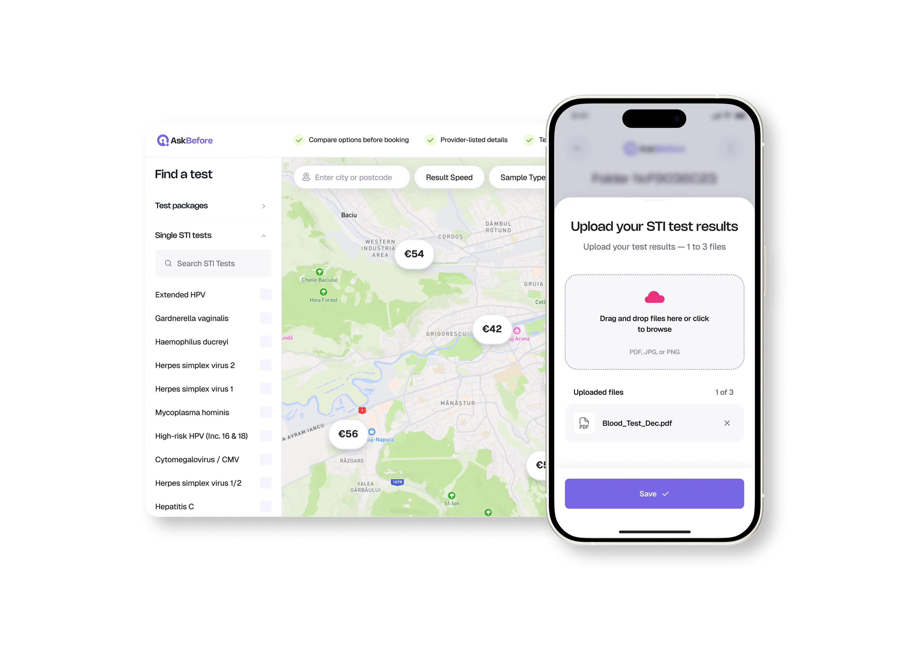

AskBefore: как упростить путь к тестированию и обмену результатами
фев. 2026 — авг. 2026
Два пользовательских продукта для доступа к тестированию на инфекции, передающиеся половым путём: карта, где можно найти клинику и записаться на анализ, и защищённый обмен результатами между людьми
Пересобрала пользовательские сценарии с учётом чувствительных данных, требований к приватности и связи между двумя независимыми продуктами
